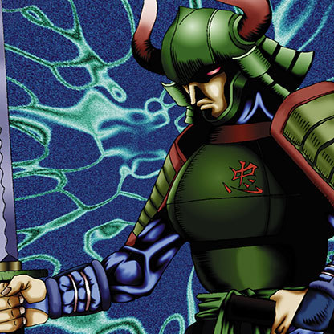

Hero of the East

STATS
ATK: 1100
DEF: 1000DECK COST
Deck Cost per Card: 21Fusion List (8 Possible Fusions)
- Hero of the East + Bone Mouse = Zombie Warrior
- Hero of the East + Cyber Commander = Cyber Soldier
- Hero of the East + Dragon Zombie = Skelgon
- Hero of the East + Flame Ghost = Zombie Warrior
- Hero of the East + Flame Snake = Flame Swordsman
- Hero of the East + Laughing Flower = Bean Soldier
- Hero of the East + Petit Dragon = Dragoness the Wicked Knight
- Hero of the East + Synchar = Tiger Axe